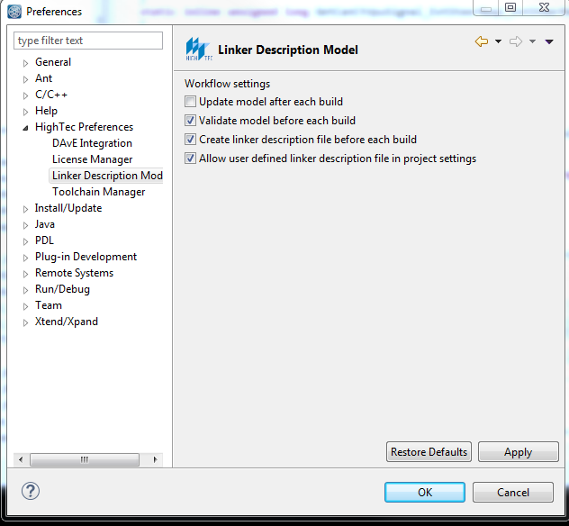

CW06: Di 12.02.2019 11:37-------------------------------------------------------------------------------------------------------------------
1) Definition PROJECT_CONFIG und CAN_CONFIG
D:\RTAS_work\rpecu_mc_b8\platform_sw\rpecu\appl\algo\0000_config\target_config.h
CW39: Mo 24.09.2018 12:57-------------------------------------------------------------------------------------------------------------------

Fehler in /rpecu/appl/algo/0000_InOutDataHandler/0000_ProtoDefinitions/nanopb verbessert:

Mo 18.09.2017 17:51
Wenn für DANA das Project anstatt RP-ECU comipiliert werden soll, dann im Projekt Rechts-Klick und Build Configurations -> Set Active
Mi 24.05.2017 09:05
Algo unter appl/algo zu finden
Im High Tec Project Explorer auf oberster Ebene Rechtsklick und Refresh aussuchen, um neu zu sortieren
Projekt bilden: Rechtsklick High Tec Project Explorer -> build procejt
=================================================================================================
=================================================================================================
Immer platform_sw auswählen:

=================================================================================================
2 Einstellungen beim ersten einladen vornehmen:
A) Menü Window->Prferences:- - Update model after each build aushacken
- - Allow user defined linker description file in project settings anhacken
- 
B) RechtsKlick auf Projekt im HighTec Project Explorer -> Import -> General -> Existing Projects into Workspace -> selct root directory, damit auf platform_sw Ordner auswählen z.B. (D:\RTAS_work\rpecu_parking_b7\platform_sw)
=================================================================================================
Wennn Zuordnungen nicht stimmen oder falsche Files zugeordnet werden:- - Rechte Maustaste auf Projekt:
- - Refresh
- - Index- > Rebuild
- auch ein rebuild Index ist gut, CompilerSchalter Update
- - Rechte Maustaste auf Projekt-> Index->rebuild
=================================================================================================
Im Aufruf drtas-Module wird in eckigen Klammern der mögliche Typname gesetzt
- - /* #sswrtas: n: admotioncontrol_init, s: [default, rpecu_phad2018_b8, rpecu_phad2018_300C, rpecu_phad2018_cube], f: init */
- - In Klammern ist der mögliche Typname in dem grünen RTAS-Tool
=================================================================================================
dbc-Files für B8
http://frd2ahjg/svn/tze/Projects/ContiGuard/dbc-files/Passat_MQB Fahrzeug
http://frd2ahjg/svn/tze/Projects/ContiGuard/dbc-files/CruisingChauffeur/PHAD2018/System-CAN/System-CAN_PHAD2018.dbc System-CAN
=================================================================================================
Die Modul-Schnittstelle ist in:

ADMotionControlTypedefs.h: Strukturen mit den Eingangs und Ausgangs Größen und Definition für RTAS /* RTAS: ....
ADMotionControl.h: Deklaration der Funktionen: void ADMotionControl_init(); // prepare all structures and initialize mutexes- bool ADMotionControl_PrepareInput(); // get the input data
- bool ADMotionControl_GatherOutput(); // process output
ADMotionControl.c Definitionen der Funktionen
=================================================================================================
=================================================================================================
=================================================================================================
=================================================================================================